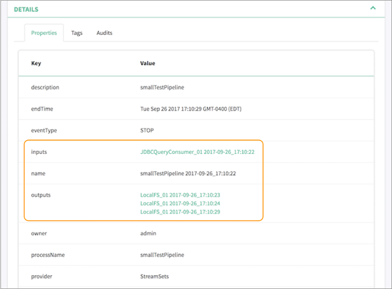
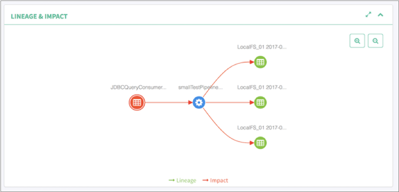

You can configure Data Collector to
integrate with data governance tools, giving you visibility into data movement - where the
data came from, where it’s going to, and who is interacting with it.
Data governance tool integration is available with a paid subscription.
For details, contact StreamSets.
Data Collector can
work with the following data governance tools:
- Cloudera Navigator
- If you use Cloudera Manager and have Cloudera Navigator installed, you can
configure Data Collector to publish metadata about running pipelines to Cloudera Navigator. When
publishing metadata, Data Collector makes an HTTPS request to Cloudera Navigator using basic authentication.
The data is sent in JSON format.
- Apache Atlas
- If you have Apache Atlas installed, you can configure Data Collector to
publish metadata about running pipelines to Apache Atlas. When publishing
metadata, Data Collector uses Apache Kafka to send the metadata to Apache Atlas. The data is sent
in JSON format.
You then use Cloudera Navigator or Apache Atlas to explore the pipeline metadata,
including viewing lineage diagrams of the metadata.
Data Collector uses
separate threads to publish metadata to data governance tools - so enabling metadata
publishing has minimal effect on the running pipeline threads. Every pipeline publishes
metadata when the pipeline starts and when it stops. Some origins and destinations
publish metadata only once, typically when they initialize. However, some stages publish
metadata each time they create a new object - for example, when the Hadoop FS or Local
FS destination creates a new output file.
Supported Stages
At this time, only some pipeline stages support publishing metadata to data
governance tools.
Data Collector
publishes metadata for all supported stages in all running pipelines. If you have
multiple Data Collectors
that run pipelines, configure each Data Collector to
publish metadata to the same governance tool instance.
Data Collector can
publish metadata for the following stages:
- Amazon S3 origin
- Dev Data Generator origin
- Directory origin
- Hadoop FS origin
- JDBC Query Consumer origin
- Kafka Consumer origin
- Kafka Multitopic Consumer origin
- SFTP/FTP/FTPS Client origin
- Hadoop FS destination
- Local FS destination
- HBase destination
- Hive Streaming destination
- Kafka Producer destination
- Kudu destination
Note: Remember that you don't enable metadata publishing at the stage level or even at the
pipeline level. You simply configure Data Collector to
publish metadata for all running pipelines.
When a pipeline includes an unsupported stage, the data governance tool does not display
that stage as an input or output in the lineage diagram. For example, if a running
pipeline includes an unsupported origin and the Hadoop FS destination, then the data
governance tool displays the pipeline as having 0 inputs and multiple outputs - one
output for each generated output file. If a running pipeline includes no supported
origins or destinations, the data governance tool displays the pipeline as having 0
inputs and 0 outputs.
Cloudera Navigator
You can configure Data Collector to
publish metadata about running pipelines to Cloudera Navigator. You then use Cloudera
Navigator to explore the pipeline metadata, including viewing lineage diagrams of the
metadata.
Data governance tool integration is available with a paid subscription.
For details, contact StreamSets.
To integrate Data Collector
with Cloudera Navigator, download and install one of the following Cloudera Navigator
stage libraries as a custom stage library:
| Stage Library |
Description |
| streamsets-datacollector-cm_5_10-lib |
Use when working with Cloudera Manager version 5.10. |
| streamsets-datacollector-cm_5_11-lib |
Use when working with Cloudera Manager version 5.11. |
| streamsets-datacollector-cm_5_12-lib |
Use when working with Cloudera Manager version 5.12. |
| streamsets-datacollector-cm_5_13-lib |
Use when working with Cloudera Manager version 5.13. |
| streamsets-datacollector-cm_5_14-lib |
Use when working with Cloudera Manager version 5.14. |
| streamsets-datacollector-cm_5_15-lib |
Use when working with Cloudera Manager version 5.15. |
| streamsets-datacollector-cm_6_1-lib |
Use when working with Cloudera Manager version 6.1. |
You then configure Data Collector to
connect to Cloudera Navigator.
Prerequisites
Before you
enable Data Collector to
publish pipeline metadata to Cloudera Navigator, you must complete the following
prerequisites:
- Verify that Data Collector has a required Cloudera CDH stage library version installed.
- To connect to and publish metadata to Cloudera Navigator, Data Collector requires Cloudera Manager versions 5.10 through 5.15 or version 6.1.
- To verify that Data Collector has a valid Cloudera CDH stage library installed, click the Package Manager
icon (
 ) to display the list of installed stage libraries.
If a required library version is not installed, install
the library before configuring Data Collector to publish pipeline metadata to Cloudera Navigator.
) to display the list of installed stage libraries.
If a required library version is not installed, install
the library before configuring Data Collector to publish pipeline metadata to Cloudera Navigator.
- Add the Cloudera Navigator data management roles to your Cloudera Manager
cluster.
- Add the following Navigator roles to the Cloudera Management Service:
- Cloudera Navigator Audit Server role
- Cloudera Navigator Metadata Server role
- For instructions, see the Cloudera Manager documentation.
Step 1. Download and Install the Stage Library
Download and install the Cloudera Navigator stage library
as a custom stage
library.
-
Using the link provided in the email that you received from StreamSets,
download the tarball containing the Cloudera Navigator stage library for your
version of Cloudera Manager.
For example, if Data Collector has the Cloudera CDH stage library version 5.14 installed, download the
streamsets-datacollector-cm_5_14-lib-1.6.0.tgz
file.
-
Extract the tarball.
The tarball is extracted into the following
directory:
<stage library name>/lib/
For example:
streamsets-datacollector-cm_5_14-lib/lib/
-
On every node that runs Data Collector, create a local directory for the custom stage libraries.
For example, you might create the custom stage library directory at:
/opt/sdc-user-libs
-
On every node that runs Data Collector, copy the extracted Cloudera Navigator stage library to the directory defined
for the USER_LIBRARIES_DIR environment variable as follows:
/opt/sdc-user-libs/<stage library name>/lib/
For
example:
/opt/sdc-user-libs/streamsets-datacollector-cm_5_14-lib/lib/
-
In Cloudera Manager, select the StreamSets service and
then click Configuration.
-
On the Configuration page, in the Data
Collector Advanced Configuration Snippet (Safety Valve) for
sdc-env.sh field, add the USER_LIBRARIES_DIR environment
variable and point it to the custom stage library directory, as follows:
export USER_LIBRARIES_DIR="<custom stage library directory>"
For
example:
export USER_LIBRARIES_DIR="/opt/sdc-user-libs/"
-
When using the Java Security Manager, which is enabled by default, update the
Data Collector Advanced Configuration Snippet (Safety Valve) for
sdc-security.policy property to include the custom stage library
directory as follows:
// custom stage library directory
grant codebase "file://<custom stage library directory>/-" {
permission java.security.AllPermission;
};
For
example:
// custom stage library directory
grant codebase "file:///opt/sdc-user-libs/-" {
permission java.security.AllPermission;
};
-
Restart Data Collector.
Step 2. Configure the Connection to Cloudera Navigator
Add lineage publisher properties to the Data Collector
configuration file, $SDC_CONF/sdc.properties, and then configure the
properties as needed. When administering Data Collector with
Cloudera Manager, configure the Data Collector
configuration properties through the StreamSets service in Cloudera Manager. Manual changes
to the configuration file can be overwritten by Cloudera Manager.
Important: Instead of entering sensitive data
such as passwords in clear text in the configuration file, you can
protect the sensitive data by storing the data in an external location and then
using functions to retrieve the data.
Configuring the properties includes enabling metadata publishing and defining the
connection to Cloudera Navigator.
If Cloudera Navigator is configured for TLS/SSL, configuring the properties also
requires specifying the local truststore file that Data Collector
uses to verify the identity of the Cloudera Navigator Metadata Server.
Warning: If metadata publishing is enabled and Data Collector cannot connect to Cloudera Navigator at start up, then Data Collector fails to start.
-
To enable metadata publishing, add the following lines to the
sdc.properties file:
# Lineage Publisher
#
lineage.publishers=navigator
lineage.publisher.navigator.def=streamsets-datacollector-cm_5_14-lib::com_streamsets_pipeline_stage_plugin_navigator_NavigatorLineagePublisher
lineage.publisher.navigator.config.application_url=http://localhost:18630
lineage.publisher.navigator.config.navigator_url=http://navigatorhost:7187
lineage.publisher.navigator.config.namespace=sdc
lineage.publisher.navigator.config.username=user
lineage.publisher.navigator.config.password=passwd
lineage.publisher.navigator.config.autocommit=false
-
To define the connection to Cloudera Navigator, modify the default values of
the following properties:
| Metadata Publisher Property |
Description |
| lineage.publishers |
Application to publish metadata to. Do not change the
default value of navigator. |
| lineage.publisher.navigator.def |
Stage library name used to connect to Cloudera Navigator,
entered in the following format: <stage
library name>::com_streamsets_pipeline_
stage_plugin_navigator_NavigatorLineagePublisher
Define
the appropriate Cloudera CDH stage library name to
enable metadata publishing. For example, if you
downloaded version 5.14 of the stage library, define the
stage library name as
follows: streamsets-datacollector-cm_5_14-lib
Do not modify the second half of the property
value.
|
| lineage.publisher.navigator. config.application_url
|
URL to Data Collector. For
example: http://<hostname>:18630/
|
| lineage.publisher.navigator. config.navigator_url
|
URL to the Cloudera Navigator UI. For
example: http://<Navigator Metadata
Server host>:<port number>/
<Navigator Metadata Server host> is
the name of the host on which you are running the
Navigator Metadata Server role. <port
number> is the port configured for the
role.
|
| lineage.publisher.navigator. config.namespace
|
Namespace that Cloudera Navigator uses to uniquely
identify Data Collector properties. |
| lineage.publisher.navigator. config.username
|
User name to connect to Cloudera Navigator. |
| lineage.publisher.navigator. config.password
|
Password for the Cloudera Navigator account. To protect the password, store the password in an external location
and then use a function to retrieve the password.
|
| lineage.publisher.navigator. config.autocommit
|
Enables Cloudera Navigator to immediately process the
published metadata. In most cases, use the default value
of false. Setting to true can use a large number of
resources on the Cloudera Navigator machine.
|
-
If Cloudera Navigator is configured for TLS/SSL, add the following lines to the
Lineage Publisher section of the sdc.properties file and
then modify the default values of the properties:
lineage.publisher.navigator.config.ssl_truststore_location=truststore.jks
lineage.publisher.navigator.config.ssl_truststore_password=changeit
| Metadata Publisher Property for TLS/SSL |
Description |
| lineage.publisher.navigator. config.ssl_truststore_location
|
Path to the truststore file containing the Cloudera
Navigator Metadata Server certificate. Enter an absolute
path to the file or a path relative to the Data Collector resources directory:
$SDC_RESOURCES.
|
| lineage.publisher.navigator. config.ssl_truststore_password
|
Password to the truststore file. To protect the password, store the password in an external location
and then use a function to retrieve the password.
|
-
Restart Data Collector for the changed properties to take effect.
Viewing Published Metadata
You can view published pipeline metadata in near real time in Cloudera Navigator.
Cloudera Navigator lists each pipeline by pipeline title and displays supported origins as
inputs and supported destinations as outputs. Cloudera Navigator also includes a URL to the
pipeline within Data Collector along
with other metadata, such as the pipeline description, labels, version, and the user who
started the pipeline.
For example, let's assume that you run a pipeline that
includes a JDBC Query Consumer origin and a Local FS destination. Cloudera Navigator
displays a single input representing the JDBC Query Consumer origin. As the pipeline
runs, the Local FS destination creates multiple output files. Cloudera Navigator
displays multiple outputs, each output representing one of the generated output files.
Cloudera Navigator displays the details of the published pipeline metadata as follows.
Note how our example Jdbc2LocalFS pipeline is listed with 1 input and 42 outputs - one
output for each generated output file:

Cloudera Navigator displays the pipeline lineage diagram as follows:

Apache Atlas
You can configure Data Collector to
publish metadata about running pipelines to Apache Atlas. You then use Apache Atlas to
explore the pipeline metadata, including viewing lineage diagrams of the metadata.
Data governance tool integration is available with a paid subscription.
For details, contact StreamSets.
To integrate
Data Collector
with Apache Atlas, download and install one of the following Apache Atlas stage
libraries as a custom stage library:
| Stage Library |
Description |
| streamsets-datacollector-apache-atlas_0_8_1-lib |
Use when working with HDP version 2.6.x and Apache Atlas
0.8.1. |
| streamsets-datacollector-apache-atlas_1_1_0-lib |
Use when working with HDP version 3.1.x and Apache Atlas
1.1.0. |
You then configure Data Collector to
connect to Apache Atlas. You also must deploy the StreamSets data model to the machine
where the Apache Atlas server is installed.
Prerequisites
Before you enable
Data Collector
to publish pipeline metadata to Apache Atlas, you must complete the following
prerequisites:
- Verify that Data Collector has a required Hortonworks Data Platform (HDP) stage library
installed.
- To connect to and publish metadata to Apache Atlas, Data Collector requires HDP versions 2.6.x or 3.1.x.
- To verify that Data Collector has a valid HDP stage library installed, click the Package Manager icon
() to display the list of installed stage libraries.
If a required library version is not installed, install
the library before configuring Data Collector to publish pipeline metadata to Apache Atlas.
- Configure the required settings in Apache Atlas.
- To connect to and publish metadata to Apache Atlas, you must configure the
following required settings in Apache Atlas:
- Configure Apache Atlas to use HBase as a persistence engine.
- Configure Apache Atlas to use Apache Kafka for notifications.
- Ensure that the graphing engine is enabled for Apache Atlas.
- For more information on configuring Apache Atlas, see the Apache Atlas documentation.
Step 1. Download and Install the Stage Library
Download and install the appropriate Apache Atlas stage library as a custom stage library.
-
Using the link provided in the email that you received from StreamSets,
download the tarball containing the Apache Atlas stage library.
-
Extract the tarball.
The tarball is extracted into the following
directory:
<stage library name>/lib/
For example,
the Apache Atlas version 0.8.1 stage library is extracted
to:
streamsets-datacollector-apache-atlas_0_8_1-lib/lib/
The
Apache Atlas version 1.1.0 stage library is extracted
to:
streamsets-datacollector-apache-atlas_1_1_0-lib/lib/
-
Create a local directory external to the Data Collector installation directory for the custom stage libraries. Use an external
directory to enable use of the libraries after Data Collector upgrades.
For example, if you installed
Data Collector in the following directory:
/opt/sdc/
you might create the custom stage library directory at:
/opt/sdc-user-libs
-
Copy the Apache Atlas stage library to this custom stage library directory, as
follows:
/opt/sdc-user-libs/<stage library name>/lib/
For
example, for Apache Atlas version
0.8.1:
/opt/sdc-user-libs/streamsets-datacollector-apache-atlas_0_8_1-lib/lib/
For
Apache Atlas version
1.1.0:
/opt/sdc-user-libs/streamsets-datacollector-apache-atlas_1_1_0-lib/lib/
-
Add the USER_LIBRARIES_DIR environment variable to the appropriate file and
point it to the custom stage library directory.
Modify environment variables using the method required by your installation
type.
Set the environment variable as follows:
export USER_LIBRARIES_DIR="<custom stage library directory>"
For example:
export USER_LIBRARIES_DIR="/opt/sdc-user-libs/"
-
When using the Java Security Manager, which is enabled by default, update the
Data Collector security policy to include the custom stage library directory as
follows:
-
In the Data Collector configuration directory, open the security policy file:
$SDC_CONF/sdc-security.policy
-
Add the following lines to the file:
// custom stage library directory
grant codebase "file://<custom stage library directory>/-" {
permission java.security.AllPermission;
};
Note: You must include a trailing /- after the
directory name.
For
example:
// custom stage library directory
grant codebase "file:///opt/sdc-user-libs/-" {
permission java.security.AllPermission;
};
-
Restart Data Collector.
Step 2. Configure the Connection to Apache Atlas
Configuring
Data Collector
to connect to Apache Atlas involves working with the following files:
- Data Collector configuration file
- Add lineage publisher properties to the Data Collector configuration file,
$SDC_CONF/sdc.properties.
- Apache Atlas application properties file
- If Data Collector is installed on a separate machine from the Apache Atlas server, copy
the atlas-application.properties file to the Data Collector machine. Modify the Apache Atlas application properties file as
needed, and then specify the location of the file in the SDC_JAVA_OPTS
environment variable on the Data Collector machine.
Warning: If metadata publishing is enabled and Apache Atlas cannot access
the atlas-application.properties file at Data Collector
start up, then Data Collector
fails to start.
-
To enable metadata publishing to Apache Atlas, modify the Data Collector configuration file, $SDC_CONF/sdc.properties.
For Apache Atlas version 0.8.1, add the following lines to the file:
# Lineage Publisher
#
lineage.publishers=atlas
lineage.publisher.atlas.def=streamsets-datacollector-apache-atlas_0_8_1-lib::com_streamsets_pipeline_stage_plugin_atlas_AtlasLineagePublisher
For Apache Atlas version 1.1.0, add the following lines to the
file:
# Lineage Publisher
#
lineage.publishers=atlas
lineage.publisher.atlas.def=streamsets-datacollector-apache-atlas_1_1_0-lib::com_streamsets_pipeline_stage_plugin_atlas_AtlasLineagePublisher1_1_0
-
If Data Collector is installed on a separate machine from the Apache Atlas server, copy the
atlas-application.properties file to the Data Collector machine.
StreamSets recommends storing the atlas-application.properties
file in the $SDC_CONF directory. For example, for an RPM installation of Data Collector, store the file in the /etc/sdc/ directory.
-
Verify that the atlas-application.properties file is
correctly configured.
For example, if you copied the
atlas-application.properties file to the
Data Collector machine, you might need to modify the following properties which specify the
Kafka installation on the Apache Atlas
server:
atlas.kafka.zookeeper.connect=localhost:9026
atlas.kafka.bootstrap.servers=localhost:9027
For
more information on the properties in this file, see the Apache
Atlas documentation.
-
On the Data Collector machine, define the -Datlas.conf system property in the SDC_JAVA_OPTS
environment variable.
Modify environment variables using the method required by your installation
type.
The -Datlas.conf system property defines the location of the local
atlas-application.properties file. Define the Atlas
system property as follows:
export SDC_JAVA_OPTS="${SDC_JAVA_OPTS} -Datlas.conf=<configuration directory> -Xmx1024m -Xms1024m -server"
The defined configuration directory must end in a forward slash (/). For
example, if you stored the file in the $SDC_CONF directory for an RPM
installation of Data Collector, define the Atlas system property as
follows:
export SDC_JAVA_OPTS="${SDC_JAVA_OPTS} -Datlas.conf=/etc/sdc/ -Xmx1024m -Xms1024m -server"
-
Restart Data Collector for the changed properties to take effect.
Step 3. Deploy the StreamSets Data Model to Apache Atlas
Download the StreamSets
data model and deploy the data model to the Apache Atlas server.
-
Using the link provided in the email that you received from StreamSets, download the StreamSets data model for Apache Atlas:
0090-streamsets_model.json
-
Deploy the data model to the machine where the Apache Atlas server is
installed.
On the Apache Atlas server, copy the StreamSets data model to the same directory that contains the Sqoop data model.
For example, if using Hortonworks version 2.6.1 for testing, copy the
StreamSets data model to the following
directory:
/usr/hdp/2.6.1.0-129/atlas/models/0090-streamsets_model.json
-
Restart the Apache Atlas server so that the server can recognize the newly
deployed data model.
Viewing Published Metadata
Data Collector
publishes pipeline metadata to Apache Atlas when a pipeline stops. Apache Atlas lists each
pipeline by pipeline title and displays supported origins as inputs and supported
destinations as outputs. Apache Atlas also includes other metadata, such as the pipeline
description, labels, version, and the user who started the pipeline.
For
example, let's assume that you run a pipeline that includes a JDBC Query Consumer origin
and a Local FS destination. Apache Atlas displays a single input representing the JDBC
Query Consumer origin. As the pipeline runs, the Local FS destination creates multiple
output files. Apache Atlas displays multiple outputs, each output representing one of
the generated output files.
Apache Atlas displays the details of the published pipeline metadata as follows. Note how
our example pipeline is listed with 1 input and 3 outputs - one output for each
generated output file:

Apache Atlas displays the pipeline lineage diagram as follows:
